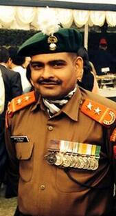

HEROES OF WAR
Grenadier Yogendra Singh Yadav
Subedar Major and Honorary Captain Yogendra Singh Yadav PVC is a retired commissioned officer in the Indian Army, who was awarded the highest Indian military honour decoration, the Param Vir Chakra, for his action during the Kargil War. Aged 19 when he received the decoration, he is the youngest person to be awarded the medal (PVC).
Lieutenant Manoj Kumar Pandey
Captain Manoj Kumar Pandey, PVC (25 June 1975 – 3 July 1999) was an officer of the Indian Army who was posthumously awarded India's highest military honour, the Param Vir Chakra, for his audacious courage and leadership during the Kargil War in 1999. An officer of the 1st battalion, 11 Gorkha Rifles (1/11 GR), he sacrificed his life for the nation in battle on Jubar Top of the Khalubar Hills in Batalik Sector of Kargil.
Captain Vikram Batra

Vikram Batra PVC (9 September 1974 – 7 July 1999) was an officer of the Indian Army. He was posthumously awarded the Param Vir Chakra, the highest Indian military decoration, for his actions during the Kargil War; on 7 July 1999, Batra was killed while fighting Pakistani troops around Area Ledge, Point 4875, in the Kargil district of erstwhile Jammu and Kashmir.
Subedar Major Sanjay Kumar

Subedar Major Sanjay Kumar PVC (born 3 March 1976) is a Junior Commissioned Officer in the Indian Army, and recipient of the Param Vir Chakra, India's highest military award.Rifleman Sanjay Kumar volunteered to be the leading scout of the attacking column tasked to capture area Flat Top of Point 4875 in the Mushkoh Valley on 4 July 1999.He was promoted to the rank of Subedar Major in February 2022.
Captain Anuj Nayyar
Captain Anuj Nayyar, MVC (August 28, 1975 – July 7, 1999) was an Indian Army officer of 17 Jat who was posthumously awarded the Maha Vir Chakra, India's second highest gallantry award, for exemplary valour in combat during operations in the Kargil War in 1999
Major Rajesh Singh Adhikari
Major Rajesh Singh Adhikari, MVC (25 December 1970 – 30 May 1999), was an Indian Army officer who died during the Kargil War. He was posthumously awarded the second highest Indian military honour, the Maha Vir Chakra for bravery on the battlefield.
Captain Gurjinder Singh Suri

Captain Gurjinder Singh Suri, MVC (04 July 1974 – 09 November 1999) was an Indian Army officer of 12 Battalion of Bihar Regiment who was posthumously awarded the Maha Vir Chakra, India's second highest gallantry award, for exemplary valor in combat during a gunbattle in the Faulad post attack in 1999
Havildar Digendra Kumar

Digendra Kumar MVC, SM (born 3 July 1969) is a former soldier of the 2nd battalion of the Rajputana Rifles regiment of the Indian army. He was awarded the Mahavir Chakra on 15 August 1999, for his acts of bravery in the Kargil War. He retired from the army on 31 July 2005.
Colonel Balwan Singh Panghal

Colonel Balwan Singh Panghal MVC (born 17 October 1973) is a decorated Indian Army officer who was awarded the Maha Vir Chakra for his courage in leading the successful assault to capture Tiger Hill during the 1999 Kargil War.
Subedar Imliakum Ao

Subedar Imliakum Ao was awarded the Maha Vir Chakra for showing exemplary courage in the face of the enemy during the Kargil war of 1999. Promoted to the rank of Subedar on August 1,2016 this highly decorated Junior Commissioned Officer continues to serve the nation with pride and dignity
Captain Keishing Clifford Nongrum
Captain Keishing Clifford Nongrum, MVC (7 March 1975 – 1 July 1999) was an Indian Army officer of 12 Jammu and Kashmir Light Infantry. He was posthumously awarded the Maha Vir Chakra, India's second-highest gallantry award, for exemplary valor in combat during operations in the Kargil War in 1999
Captain Neikezhakuo Kengurüse

Captain Neikezhakuo Kengurüse, MVC (15 July 1974 – 28 June 1999) was an Indian Army officer from Nagaland.Kengurüse was an officer of 2 Rajputana Rifles, who was posthumously awarded the Maha Vir Chakra, India's second highest gallantry award, for his exemplary valour in combat during operations in the Kargil War in 1999
Major Padmapani Acharya

Major Padmapani Acharya, MVC (21 June 1969 – 28 June 1999) was an officer in the Indian Army. He was awarded the second highest Indian military honour, Maha Vir Chakra posthumously for his actions during the Kargil War on 28 June 1999.
Colonel Sonam Wangchuk

Colonel Sonam Wangchuk, MVC is an Indian Army veteran, who served with the Assam Regiment and the Ladakh Scouts. He was awarded the Maha Vir Chakra, India's second highest award for gallantry in the face of the enemy, during his successful operation in the Kargil War.
Major Vivek Gupta

Major Vivek Gupta MVC (2 January 1970 – 13 June 1999) was an officer in the Indian Army. He was posthumously conferred the Maha Vir Chakra, India's second highest war-time military honour, for his actions during the 1999 Kargil War (Operation Vijay).He belonged to the second battalion of the Rajputana Rifles, also known as 2 Raj Rif. He was also awarded the Chief of Army Staff (COAS) commendation card during his service
Squadron Leader Ajay Ahuja

Squadron Leader Ajay Ahuja VrC (22 May 1963 – 27 May 1999) was a fighter pilot of the Indian Air Force who was killed during the Kargil War between India and Pakistan in 1999. His MiG-21 was hit by a surface-to-air missile fired by the Pakistan Army near the town of Kargil in the Indian territory of Jammu and Kashmir. Ajay Ahuja ejected from the aircraft and parachuted to the ground.
Group Captain Kambampati Nachiketa Rao
Group Captain Kambampati Nachiketa Rao, VM is a retired officer of the Indian Air Force. While carrying out an Airstrike on Pakistani positions in Batalik sector during the Kargil War, he was shot down and captured on 27 May 1999 by a Pakistani Unit led by Capt Rao Tahseen Ali. Nachiketa ejected from his MiG-27L and was held in Pakistani custody. He is presently a Captain at Indigo Airlines.
Gunjan Saxena
(KARGIL GIRL)
Gunjan Saxena (born 1975)is an Indian Air Force (IAF) officer and former helicopter pilot. She joined the IAF in 1996 and is a 1999 Kargil War veteran.She is one of the first women to fly in a combat zone. One of her main roles during the Kargil War was to evacuate the wounded from Kargil, transport supplies and assist in surveillance.